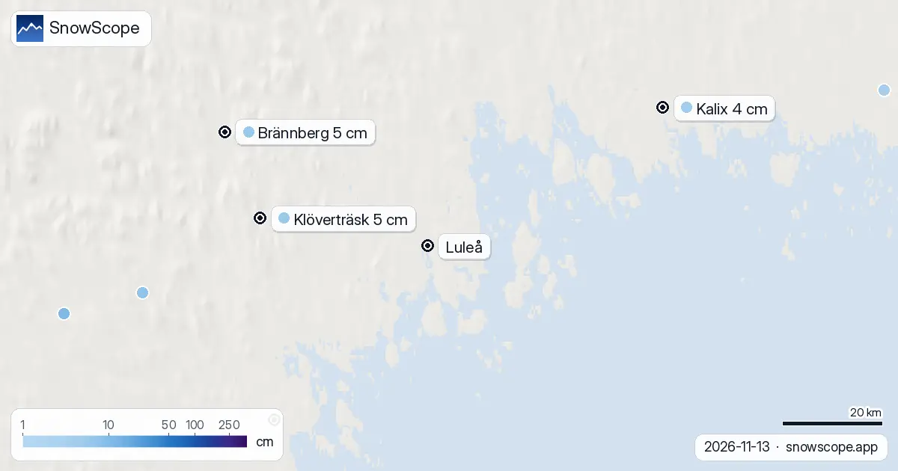

Saariselän lumiraportti: kylän asemalla 4 cm, lisää tulossa (14. marraskuuta 2026)
Saariselällä on jotain hiihtokeskuksille harvinaista: virallinen sääasema aivan kylässä, 2 km:n päässä rinteistä, 304 metrissä. Se mittasi aamulla 13. marraskuuta 4 cm lunta, saman verran kuin jokaisena neljänä edellisenä päivänä. Idempänä 186 metrissä olevalla Raja-Joosepin asemalla oli 6 cm, ja etelässä Vuotsossa ei lainkaan. 46 talven tilastomme antavat täällä tavalliseksi lumensyvyydeksi 14. marraskuuta noin 17 cm.
Katso kohteen Ski Saariselkä lumiennuste reaaliajassa SnowScope-sovelluksessaLumensyvyys, puuterihälytykset ja 3D-kartta, ilmaiseksi.
Ohut kerros, joka on pysynyt
Lukema on tuskin liikahtanut viikkoon: 3 cm ja sitten 4 cm joka aamu 9. marraskuuta lähtien. Pakkasta on siis riittänyt, ettei lumi ole sulanut, mutta uutta ei ole juuri satanut. Oma arviomme viimeisen seitsemän päivän uudesta lumesta on noin 2–3 cm.
Kylän yläpuolisilla tuntureilla tällainen kerros peittää polut mutta ei kivenlohkareita. Näyttää talviselta, mutta talven pohjaa ei vielä ole.

Tämän viikon lumi
Odotamme seuraavien seitsemän päivän aikana noin 22 cm, alkaen noin 5 sentillä seuraavan vuorokauden aikana. Muut vertailemamme ennusteet antavat 25–45 cm. Kaikki tulee lumena: vettä ei sada millään korkeudella, ja lunta tulee järvien tasolle asti.
Miten kausi yleensä etenee
46 mennyttä talveamme antavat tavalliseksi lumensyvyydeksi 22 cm 21. marraskuuta, 27 cm 30. marraskuuta ja 34 cm 15. joulukuuta. Keskimääräisenä talvena lumensyvyys on suurimmillaan noin 70 cm, ja maa on valkoinen noin 212 päivää. Pitkä tilasto on vakaa: keskimääräinen maksimi 74 cm ensimmäisten 15 talven aikana ja 70 cm viimeisten 15 talven aikana.
Milloin rinteet aukeavat
Ski Saariselän oman sivuston mukaan tavoitteena on avata 21. marraskuuta 2026, ja päivittäiset aukioloajat ovat voimassa 20. joulukuuta asti. Kartoitettu alue on pieni, 9 km rinteitä ja 2 hissiä, joten vähäinenkin tykkilumi riittää pitkälle.
Vinkkejä laskijoille
- Urho Kekkosen kansallispuisto alkaa kylän laidalta: kun maassa on 4 cm, retkikengät riittävät pääreiteillä tänä viikonloppuna.
- Kaamos on näillä leveysasteilla lähellä; retkien päärajoite on valo, ei lumi.
- Tämän viikon lumisateiden jälkeen kylän ympärille on odotettavissa ensimmäiset ladut; tarkista paikallinen latutilanne.
Lisää karttoja (ulkoiset sivustot)
Lähteet ja tekijät
- Ilmatieteen laitos, avoin data (CC BY 4.0) en.ilmatieteenlaitos.fi/open-data
- Ski Saariselkä, virallinen sivusto: avauspäivät ja hissitilanne, luettu 13.11.2026 skisaariselka.com/
Näistä luvuista
Mitattu lumi: aamulukemat 13. marraskuuta 2026 Ruotsin (SMHI:n avoin data), Suomen (Ilmatieteen laitoksen avoin data, CC BY 4.0) ja Norjan (MET Norwayn asemaraportit, CC BY 4.0, julkaisija Ogimet) virallisilta sääasemilta. Norjan kansallinen lumikartta seNorge (NVE ja MET Norway, NLOD) antaa rinteille arviot 1 km:n ruudukossa. Omat lukumme: SnowScopen ennuste seuraaville seitsemälle päivälle hiihtokeskuksen kolmella korkeudella, verrattuna riippumattomiin ennusteisiin (ECMWF, ICON, GFS, GEM) ajalle 14.–20. marraskuuta; 46 menneen talven lumihistoria (1980-81–2025-26), korkeuden mukaan korjattu menneisyyden malli. Avauspäivät: hiihtokeskusten omat sivut, luettu 13.11.2026. Rinteiden pituus ja hissien määrä: OpenSkiMap-kartoitus.
Viralliset lumivyöryennusteet: EAWS – European Avalanche Warning Services
Viittaa tähän raporttiin
Tutkimukseen, opetukseen tai mediaan: luvut ja kaaviot ovat vapaasti käytettävissä CC BY 4.0 -lisenssillä tällä lähdeviitteellä.
SnowScope (2026), Saariselän lumiraportti: kylän asemalla 4 cm, lisää tulossa (14. marraskuuta 2026), https://snowscope.app/blog/fi/2026/11/saariselka-snow-report-14-november-2026.html, luettu 2026-11-14
SnowScope (Atlas Labs). (2026, November 14). Saariselän lumiraportti: kylän asemalla 4 cm, lisää tulossa (14. marraskuuta 2026). SnowScope snow reports. https://snowscope.app/blog/fi/2026/11/saariselka-snow-report-14-november-2026.html
BibTeX
@misc{snowscope2026saariselkasnowreport14no,
author = {{SnowScope (Atlas Labs)}},
title = {Saariselän lumiraportti: kylän asemalla 4 cm, lisää tulossa (14. marraskuuta 2026)},
year = {2026},
month = nov,
howpublished = {\url{https://snowscope.app/blog/fi/2026/11/saariselka-snow-report-14-november-2026.html}},
note = {Published 2026-11-14 17:09 UTC; accessed 2026-11-14}
}· CC BY 4.0 · Menetelmät, data ja työkalut →
Ski Saariselkä: lumi ja lämpötila korkeuden mukaan, tämä talvi ja viime talvi (työkalut) →
Seuraa: Ski Saariselkä
Ilmainen: viesti, kun uutta lunta on tulossa, ja ennuste joka aamu.
Lisää lumiraportteja

Luulaja 13. marraskuuta 2026: Kallaxin lentoaseman asema ei lähettänyt tänään lumensyvyyttä, mutta kaupungin ympäristön asemat mittasivat 3–7 cm, kaikki torstain jälkeen satanutta, ja perjantaina sataa lisää.

Kiirunan lumensyvyys 13. marraskuuta 2026: 0 cm kaupungin asemalla, Jukkasjärvellä ja Esrangessa. 46 talven lumihistoriassamme kaupungissa oli tänä päivänä aina lunta. Mitä viikonloppu tuo.

Helsingin lumensyvyys 13. marraskuuta 2026: 0 cm Kaisaniemessä, Kumpulassa, Tapiolassa, Helsinki-Vantaalla ja Nuuksiossa. Tavallinen ensilumen päivä ja viikonlopun ennuste, joka pitää kaupungin harmaana.